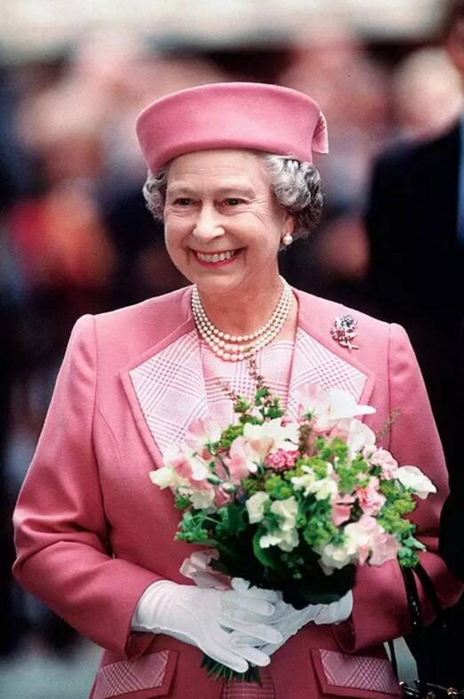

常年保持96斤，英国女王这辈子几乎每天都在减肥
2018-06-22 14:59 编辑：洪涌
上个月哈里王子结婚，听说他出手阔绰的女王奶奶送了一幢“鬼屋”（桑德灵厄姆皇家区域的约克别墅）给他当礼物！？
不知道小俩口住起来会不会不开心，要知道，关于这栋房子的评价都不太乐观。
所以，英国媒体都大力劝哈里和梅根慎重考虑要不要接受这栋房子，《每日邮报》甚至直言不讳地指出约克别墅“沉闷”“丑陋”“毫无价值”。
但是，女王大人送的礼物，拒收了好像又显得有点不那么礼貌，emmmmmmmm，真是好为王子捉急啊~~
还是让我们来说说女王吧，从调皮小公举到英姿飒爽女王再到待机时间最长的陛下，她在公众的眼里，一直都是位美人，什么时候出场，都是神采奕奕。
如今，英国女王伊丽莎白二世92岁了，依然时髦，最重要的是，伊丽莎白二世公布出来的体重始终保持105磅，也就是不到96斤哦！
感觉女王奶奶这辈子就没胖过，还是说她几乎每天都在减肥，这是怎么办到的！？
为了减肥的女王 吃饭到底有多讲究
英国食物很黑暗，英国王室规矩多，但英国女王也是人啊，也有饮食方面的小小癖好。
王室的前御用主厨Darren McGrady，就爆料过王室成员用餐不为人知的秘密，先来看一看女王她的饮食铁律。
女王一天会吃四顿，分别是早饭、午饭、下午茶和晚饭，而且，白金汉宫的菜单基本60年如一日，只有“微调”，没有“大改”。
早餐通常是很简单的燕麦牛奶，加上一把无盐无糖坚果或西梅干，外加生鲜水果，大吉岭红茶、格雷伯爵茶是女王最爱，每天早晨都要来一杯。
午餐是一两片牛肉或火腿，配西红柿+莴笋叶；沙拉坚决不蘸蛋黄酱之类的。偶尔为了增加蛋白质，会吃上一些不加酱料的烤比目鱼，搭配菠菜或西葫芦。
小号的黄瓜三明治是下午茶的日常，也会切换成司康，或者她最爱的英国传统水果蛋糕Dundee cake。
晚餐不吃淀粉，原则上是高蛋白和低脂肪！菜单一般是菲力牛排、羊排、烤牛肉、松鸡或鲑鱼，水果也是低糖的，比如温莎城堡自种的草莓、桃子。

通常御厨会提前把餐单和菜量呈送女王，每道菜提供两个选择，女王会亲手用笔划掉总量较大或是热量较高的那一道。
加餐是鸡尾酒
女王在每天1点的午餐前，总爱来一杯白金汉宫特调鸡尾酒——英国本土产的松子酒搭杜本内酒，加柠檬片和冰块。
特别强调应季和时令
注重四季吃应季的新鲜食物，女王喜欢自家种的东西，尤其是自家花园种的草莓、桃子。
私下就餐保持克制，绝不吃过饱
和许多小姑娘一样，女王特别爱吃黄油，在午宴和晚宴时喜欢添加很多黄油和奶油；但每当她自己用餐时，往往都很克制清淡，为了保持身材只吃烤鸡肉配沙拉，绝不多吃。
女王也会挑食
女王对食物的兴趣很广泛，鸟类、野鸡、鹧鸪等等她都喜欢。
讨厌吃土豆，意面、米饭、面包这些碳水化合物统统不吃，大蒜更是决不允许出现在她的菜单上，她非常不喜欢那个味道。
认真对待“欺骗餐”
女王真的很爱甜点，特别是jam pennies（一种切成圆形小块的果酱三明治）和黑巧克力蛋糕，但因为太高热量，为了身材，为了形象，她只有在王室宴会上，才和大家一起吃几口。
每每还会在宴请结束之后，做会及时调整。接下来的几天，她都会以清淡的素餐为主，并增加运动，将多余的热量及时释放，女王也真是很拼啊。
关于运动瘦身，女王做过哪些努力
除了会好好选择吃的东西，还要运动啊，那么，女王一般健身的时候都会去玩儿些啥运动？
能跑咱就别走着
为了保持好的身材和状态，女王会利用一切时间动起来。哪怕出访，也尽量多走多站少坐下。
偶尔还要皮一下，玩个跳伞骑个马赛个车什么的！
走皇室正步
对于公务繁忙，又有一颗保持常年减肥状态之心的女王来说，几十年来，伊丽莎白二世一直坚持周末在温莎公园里踢正步。
没错，虽然还没有到踢腿生风、落地砸坑的程度，那也是英国大兵标准的正步法：抬头挺胸，目视前方，步速较快，直到身体微微出汗。